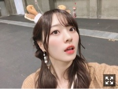
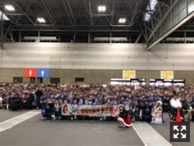
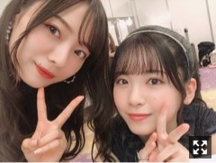

屈せずしっかり

トナカイの角、付けました
普段ほとんどチョコを食べないのだけど
最近チョコが食べたくなって仕方ないのです。
美味しくてたまらないですよね〜
こんなに求めるのは冬だからかな〜
握手会ありがとうございました！
名古屋にて全握、個握と
２日連続で握手会でした〜
たくさん元気を貰いました。
サンタ着ました。
毎年着ているこのサンタ。（笑）
皆様クリスマスは好きですか？
わたしは今が一番好きな季節︎︎︎︎✌︎けど、
クリスマスが終わった次の日の
何事も無かったように元通りになり
一気に年末モードに駆け上がる雰囲気が
どこか寂しくなり苦手です。（笑）
クリスマス当日よりも
イブの方が、なんだか好きです。
それは小さい頃から、ずっと︎︎︎︎✌︎
サンタさん、来ますかね〜
個握では少し早めの生誕祭も開いて頂きました！
ありがとうございました！
たくさんの方にお祝いしていただけて
本当に嬉しく思います。
もう、１ヶ月もしないうちに２１歳になります！ひゃあ！早い！
お手紙はみりあさんが読んでくれました☀︎
とっても嬉しかったなあ、、
また旅行に行く約束もしているのでとても楽しみです❤︎

(たくさんの方に映っていただいたので、うっすらフィルターかけさせて頂きました。)
お花も沢山頂いて一つ一つ写真撮ったのですが
収まりきれないのでメールに送りますね。
ごめんね、いつもありがとう！！
年が明けてすぐ誕生日ということもあり
この時期になってくると
慌てて振り返りを一人で始め
１年で何が変わったか収穫できたか
明確に何かが欲しく手を伸ばしますが
中々出てこないんです。毎年。( .. )
ただただ、関わってくださった方への感謝でいっぱいです！
自分の感情を誰かに伝えたり相談したり
感情のままに行動することが少ない私は
時間が経った後に必ず後悔するのです。
それが正しいと思える時も、あります。
けど、中々ね、虚しい結果に終わります
計画性を持って、行動して
人に何かを伝える時も遠回りだし
素直に気持ちを打ち明けられる人を見ては
羨ましくなったりしますが
私には、中々、できません。
自分の嫌いな部分が見えているのなら
直せばいいと思うけれど
そう簡単にいかないから人生は難しいなあと感じます！！
自分が理不尽に感じたことや
誰かに伝えたくて仕方ない感情が溢れ出た時
それを伝えないまま儚く消えるほど悲しいことはありません。
そんなことばかりなんですがね( '-' )
時間が経てば
そう感じていたことさえ
忘れてしまうこともあります。なら、
誰かに共有した方が良かったなあと、
時が経ってから思います( '-' )
来年は克服できたらいいな〜！
２１歳になる梅澤も
どうぞよろしくお願いします！
告知◎
▽１２／２０ 「B.L.T. お正月特大号」
▽１２／２６ 「with」
「週刊少年チャンピオン」
▽１２／２７ 「乃木坂46×週刊プレイボーイ2019」
ぜひお手に取ってみてください！
母の角煮が大好きで仕方がなくて
実家に帰った時は毎回リクエストします。
中々会えない日が続き
家族が恋しくなったので自分で作りました。
母に連絡をしました。
腕を上げたな！と褒めてもらえました。
嬉しい。母の料理にはまだまだ敵いません。
家族に会いたくって仕方がないです！
コメントに質問がきていたので少し答えますね
Q.黒スキニー履いてる男性か黒のワイドパンツ履いている男性どっちが好き？
A.黒スキニー！ぴたっとしすぎてない、スキニーですかね〜。基本シンプルが好きです。落ち着いたトーンの服がよいですね。
Q.ラーメンは硬麺派ですか？
A.はい。どちらかと言えば。父がラーメン大好きなのでよく食べにいってたなあ。家系ラーメン大好きです。
Q.誰かにプレゼントする時、どう選びますか？
A.相手との会話の内容を思い返します。何気ない普段の会話にヒントがあったりするので。それと、これは絶対なのですが、自分が持ってたり使ったことのある、自分も好きなものを選ぶようにしています◎あとはもう直感とイメージですね。それと気持ち。難しいですよね、本当に。（笑）けど、なんでも嬉しいものですよ☀︎
コメントいつもたくさんありがとうございます！
私には勿体ないくらいの素敵な言葉が
つらつらと並んであるのが
とても嬉し苦しくなりまする( .. )（笑）

あやめちゃん。可愛すぎるなあ(；；)
最近はずっと
鈴木愛理さんの「Break it down」を聴いています。
大好きな鈴木愛理さんの歌声と
大好きな髭男さんの作った音楽。
最高に決まってるじゃないですか！
ダンスもかっこよくて最強です。
あとは馬場ふみかさんの「ばばたび」もゲットしましてとても癒されています︎︎︎︎✌︎
それとアニメ「七つの大罪」が
今物凄く激アツですね。見てますか？
涙無しでは見られません、、
私は単行本派の人間なのでマガジンで先読みの方はネタバレしないでね、( '-' )
なんだかばばーっと書いてしまった。
もう今年もあと１０日、、？
信じ難い事実ですなあ（笑）
明日は年内最後の、
そして「夜明けまで強がらなくてもいい」
最後の握手会です！
ぜひ、会いに来てね
私は 6B号館 １３レーンにてお待ちしております。
握手エリアいくつか分かれていますので
皆様推しに会いに行く際にはお間違えなく。
おやすみなさい。
皆様、良い日々をお過ごしくださいね。
無理せず、やり残したことは
来年、きっとまたできる☀︎
私も一歩ずつ少しずつ、
焦らずしっかりと、過ごします。
Original：https://www.nogizaka46.com/s/n46/diary/detail/54098?ima=4940&cd=MEMBER